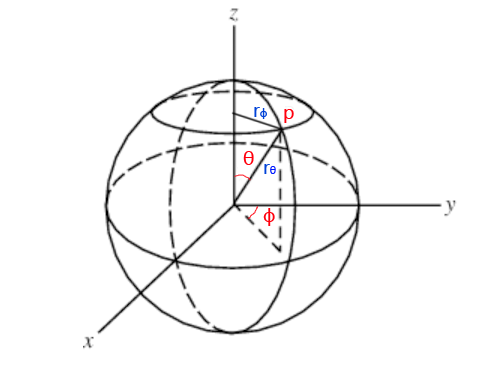

渲染基础理论的介绍
Tags: math, computer graphics
基础概念
辐射通量(Flux)
辐射通量(Radiant Flux)，指的是单位时间到达一块平面(或一个局部空间区域)的能量总和。单位是焦耳每秒(joules/second,，J/s)，或瓦特(watts，W)。符号是\(\Phi \)。
一个点光源发射出去的能量大小可以用Flux来描述。其中要注意的是，Flux描述的是单位时间的能量，那么对于点光源来说，Flux只和光源的强弱有关，所以下图的2个圆圈的Flux值是一样的。

辐射密度(Irradiance) 和 辐射照度(Radiant Exitence)
辐射密度也叫辐射照度。定义了辐射通量后，就可以定义辐射照度了，辐射照度指的是单位面积进入的辐射通量，单位是\(W/m^{2}\)。根据这个定义用符号E表示。
辐射照度和辐射密度是近似的东西，辐射照度指的是单位面积离开的辐射通量，单位也是\(W/m^{2}\)。用符号M表示。
以上面的点光源来分析，可以知道上图中内圆圈的辐射照度比外圆圈的辐射照度大，这是因为内圆圈的面积更小而点光源的Flux值恒定，所以内圆圈的E值就大。
用公式表示：
\[ E = \frac { 点光源辐射通量 }{ 球的表面积 } = \frac {\Phi}{4\pi r^{2} } \]
可见，W恒定，半径r越小，那么辐射照度E越大。
当假设光源在无限远处时，可把光源认为是一块平面（这种光源叫方向光）。此时，光源平面与被照射平面存在2种情形：光源平面与被照射平面平行（下图中的A）、光源平面与被照射平面不平行（下图中的B）：

(图中的平面附近的A指的是面积Area)
当光源平面与被照射平面平行时，有：
\[ E_{1} = \frac {\Phi}{ A } \]
当光源平面与被照射平面不平行时，需要根据平面的法向量和光线方向的夹角θ，先求出\( A^{'} \)：
\[ cos\theta = \frac { A }{ A^{'} } \]
\[ A^{'}= \frac { A }{ cos\theta } \]
于是得到：
\[ E_{2} = \frac {\Phi}{ A^{'} } = \frac {\Phi}{ \frac { A }{ cos\theta } } = \frac { \Phi cos\theta }{ A } \]
也可以记为
\[ E = \frac { \Phi cos\theta }{ A^{\perp } } \]
( \( A^{\perp } \) 指A'在光线的方向的正交平面上的投影)
微分形式：
\[ dE = \frac { d\Phi cos\theta }{ dA^{\perp } } \]
根据这个式子，可以想到，当θ逼近0度时，cosθ等于1，法向量和光线方向平行（上图中的A）；当θ逼近90度时，cosθ等于0，辐射照度E为0（光线垂直于法向量了）。
立体角(Solid Angle)
理解立体角之前要先理解圆心角。在二维平面上，一个圆的圆弧的微分记为ds(也叫弧微分)，半径为r，则圆心角指的是弧微分与半径的比值:
\[ d\theta = \frac {ds}{r} \]
对这个式子做0到2π的积分的话，显然右边的分子变成了圆周长2πr，圆心角为\( \frac { 2πr }{r} = 2π \)。
立体角与圆心角非常类似。立体角的ds的含义是球面上的面积微分，而分母需要变成半径r的平方（1球面度所对应的立体角所对应的球面表面积为\(r^{2}\) ）：
\[ d\omega = \frac {ds}{r^{2}} \]
因为球体表面积等于\( 4πr^{2} \)，所以上面的式子积分到整个球体的话，立体角等于4π。
在宏观上看，立体角的定义是：
\[ \Omega = \frac {A}{r^{2} } sr \]
其中，sr是单位，叫做球面度；A是这个立体角所对应的球表面积，A被叫做spherical cap(球帽?)。
spherical cap的几何表示如下：

(from wiki)
spherical cap面积等于\(2\pi rh \)，所以上式可变成：
\[ \Omega = \frac {2\pi rh}{r^{2} } sr \]
当h等于r时，得到：
\[ \Omega = \frac {2\pi rr}{r^{2} } sr = 2\pi \ sr \]
此时得到的是半球的立体角，那么就可以知道整个球的立体角为\(4\pi \)，和上述结论一致。
辐射强度(Intensity)
辐射强度指辐射通量和立体角的比值，符号是I。注意，这里的立体角有朝向性，用新的符号\(\omega \)区分。
\[ I = \frac { \Phi }{d\omega } \]
因为定义中用到了立体角，立体角只存在在点光源中，所以辐射强度是对点光源才有意义的。
辐射亮度(Radiance)
辐射亮度是指辐射通量与单位面积单位立体角的比值。符号为L。定义式如下：
\[ L = \frac { d\Phi }{ d\omega dA^{\perp } } \]
或：
\[ L = \frac { I }{ dA^{\perp } } \]
物理含义如下图所示：
注意：在计算机图形学中，辐射亮度比起上面其他物理量，都重要地得多。
如果要求平面上某点p的某方向\(\omega \)的辐射亮度L(Radiance)，可用下面的符号表示：
\[ L(p,\omega ) \]
其中，\(\omega \)的方向需要注意，因为它是一个立体角，立体角的圆心是p，\(\omega \)的朝向必然是从圆心p往外（向量起点是p）。
实际上，需要区分成入射(input)和出射(output)2种辐射亮度L，用下面2个符号表示：
\[ L_{i}(p,\omega ) \]
\[ L_{o}(p,\omega ) \]
且在现实世界中有：
\[ L_{i}(p,\omega ) \neq L_{o}(p,\omega ) \]
还有，上面的这个p不能简单认为真的是一个无体积的点，它也可能是一个无限小的平面块，即它是一个有面积A、有法向量n的“点”。对于这样一个“点”，我们可以求出它的上半球(沿着n的方向)的辐射密度值\( E(p, n) \)：
\[ E(p, n) = \int _{\Omega } L_{i} (p,\omega ) |cos\theta |d\omega \]
分析下这个式子的由来。首先搬出上文给出的L和E的公式：
\[ L = \frac { d\Phi }{ d\omega dA^{\perp } } \]
\[ E = \frac { d\Phi cos\theta }{ dA^{\perp } } \]
所以有：
\[ d\Phi = L d\omega dA^{\perp } \]
\[
E = \frac { d\Phi cos\theta }{ dA^{\perp } }
= \frac { L d\omega dA^{\perp } cos\theta }{ dA^{\perp } }
= L d\omega cos\theta \]
对上式做整个半球的积分，就得到了：
\[ E = \int _{\Omega }L|cos\theta |d\omega \]
也就是：
\[ E(p, n) = \int _{\Omega } L_{i} (p,\omega ) |cos\theta |d\omega \]
其中的\( cos\theta \)加绝对值是因为我们求的是半球的积分，立体角\(\omega \)和法向量的夹角必然是锐角，锐角的余弦值必然大于等于0。
立体角(Solid Angle)转换到球形角(Sphere Angle)
Spherical Coordinates坐标系下的单位球，可用2个弧度变量来定位球面上一个点：\(\theta 和 \phi \)。和三维坐标系的对应关系如下：
\[ x = sin\theta cos\phi \]
\[ y = sin\theta sin\phi \]
\[ x = cos\theta \]
简单验证下。把上面3个式子代入单位球公式:\(x^{2}+y^{2}+z^{2} = 1\)，可得：
\[ (sin\theta cos\phi)^{2} + (sin\theta sin\phi )^{2} + cos^{2}\theta = 1 \]
\[ sin^{2}\theta (cos^{2}\phi + sin^{2}\phi ) + cos^{2}\theta = 1 \]
\[ sin^{2}\theta + cos^{2}\theta = 1 \]
那么，立体角\(\omega \)和\(\theta 、 \phi \)是什么关系呢？先给出答案：
\[ d\omega = sin\theta d\theta d\phi \]
似乎有点莫名其妙，这里我详细解释吧。首先先搞懂\( d\theta 和 d\phi \)的几何意义。
弧度变量的单位是弧度，1弧度的定义是：弧长s等于半径r的弧对应的圆心角为1弧度。因此可以知道整个圆的弧度为周长\(2\pi r\)除以半径\(r\)等于\(2\pi \)。
因此，如果已知弧度和半径，就可以求出弧长s，那么上面的\(\theta 、 \phi \)对应的弧长就是：
\[ s_{ \theta } = r_{ \theta }\theta \]
\[ s_{ \phi } = r_{ \phi }\phi \]
微分形式：
\[ ds_{ \theta } = r_{ \theta } d\theta \]
\[ ds_{ \phi } = r_{ \phi } d\phi \]
\( r_{ \theta }、r_{ \phi }\)的值并不是相等的，需要接着分析。
在球坐标系下，\(\theta 、 \phi \)指的是这2个角：

\(\theta\)是目标点p与z轴的夹角；而\(\phi\)是目标点p在xy平面上的投影与y轴的夹角。
从图可知，\( r_{ \theta } \)与圆的半径r相等；而\( r_{ \phi } \)是小于等于r的(注意看上面的小圆)，且有：
\[ sin\theta = \frac { r_{ \phi } } {r_{ \theta } }\]
当球是单位球时，球的半径为1，所以有：
\[ r_{ \theta } = 1\]
\[ r_{ \phi } = sin\theta r_{ \theta } = sin\theta \]
又因为在微观下，立体角对应的曲面(或者叫球帽)面积可以当做一个小矩形看，这个小矩形dA的面积等于2个弧长\( ds_{ \theta } \)和\( ds_{ \phi } \)的积：
\[ dA = ds_{ \theta }ds_{ \phi } = r_{ \theta } r_{ \phi }d\theta d\phi = sin\theta d\theta d\phi \]
再因为立体角的微分其实也就是这个小矩阵，那么就有：
\[ d\omega = dA = sin\theta d\theta d\phi \]